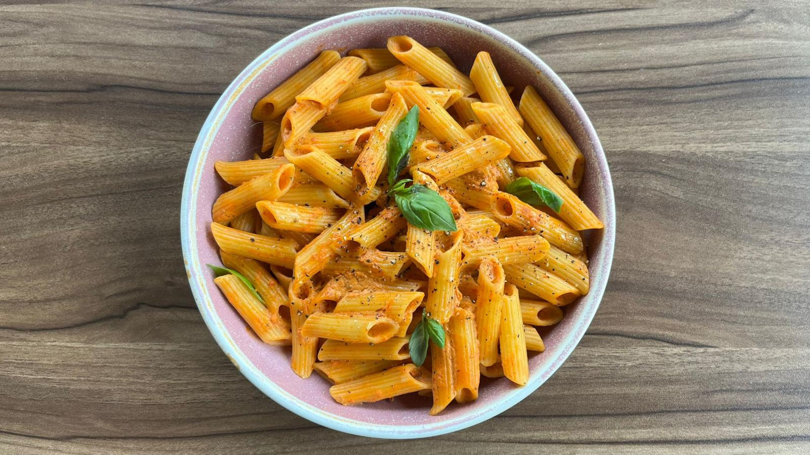

Spaghetti with Tomato Sauce Recipe
Check More Recipes!

Classic, Easy, and Delicious
Ever crave a comforting and satisfying Italian dish?
Something easy to make and flavorful to eat?
Look no further than this Ultimate Spaghetti Recipe!
Keep reading to know how you can achieve this pasta masterpiece.
Ingredients:
- 12 oz spaghetti
- 2 tablespoons olive oil
- 1 onion, finely chopped
- 3 garlic cloves, minced
- 2 cups fresh or canned crushed tomatoes
- 1 teaspoon dried basil
- 1 teaspoon dried oregano
- Salt and pepper, to taste
- Grated Parmesan cheese, for serving (optional)
Instructions:
- Bring a large pot of salted water to a boil. Cook the spaghetti according to package instructions until al dente. Reserve 1 cup of pasta water before draining.
- In a large skillet, heat the olive oil over medium heat. Add the chopped onion and cook until translucent, about 3-4 minutes.
- Add the minced garlic and cook for another minute, until fragrant.
- Add the crushed tomatoes, dried basil, and dried oregano. Season with salt and pepper to taste.
- Simmer the sauce for 10-15 minutes, stirring occasionally, until the sauce has thickened and the flavors have melded together.
- Add the cooked spaghetti to the sauce and toss to combine, adding some reserved pasta water if the sauce seems too thick.
- Serve the spaghetti hot, topped with grated Parmesan cheese if desired. Enjoy!